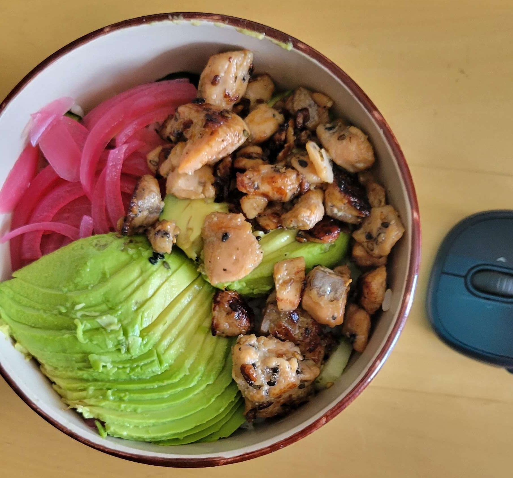
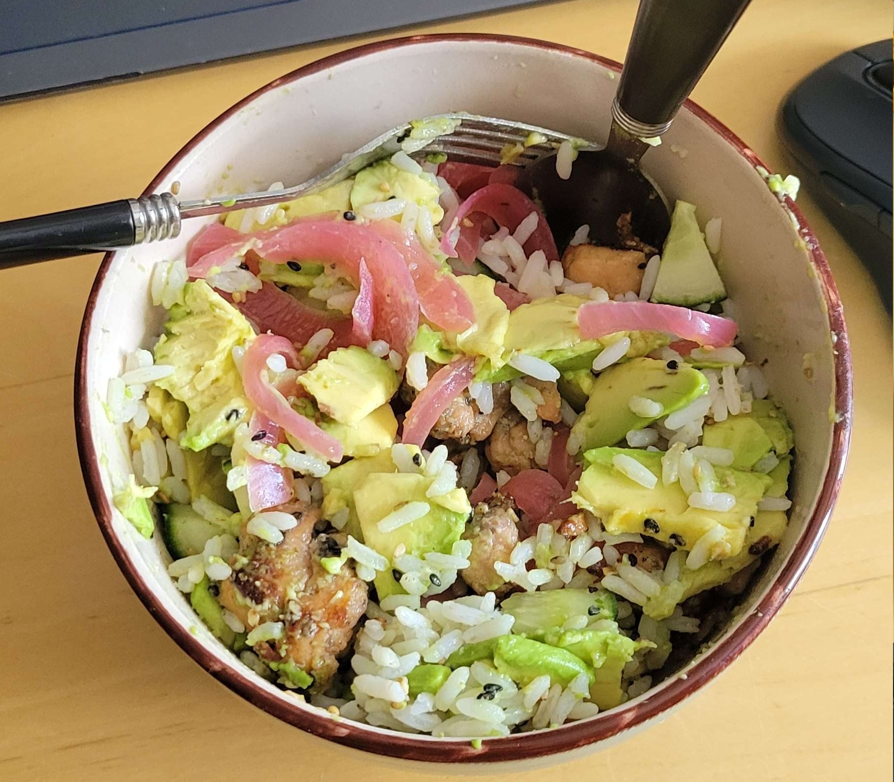

Salmon Bowl


a rice base bowl with salmon and vegetables thrown in
Ingredients
salmon fillets (350g)
soy sauce (45g)
mirin (30g)
sesame oil (10g)
sesame seeds (15g)
rice (guess the amount!)
pickled onion (base it on vibes!)
cucumber (its fairly inconsistent!!)
1 avacado
furikake (sprinkle based on vibe!)
Instructions
- slice salmon into small cubes, add to container along with
soy sauce, mirin, sesame oil, and sesame seeds, leave marinade
to settle for at least 30 mins
- put salmon on stove to cook
- while salmon cooks, chop cucumber + avacado into small cubes
- put rice in bowl, place cucumbers in rice, sprinkle furikake, mix
- put pickled onions and avacado on rice
- take salmon off of stove when you feel like you won't get salmonella
poisoning upon consumption, place on top of bowl, mix if you feel like it
Back to Main Page